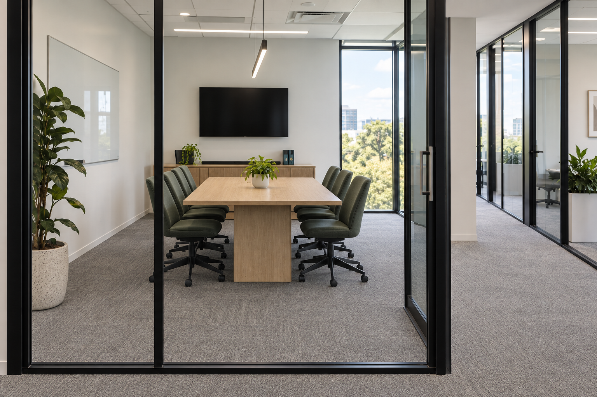
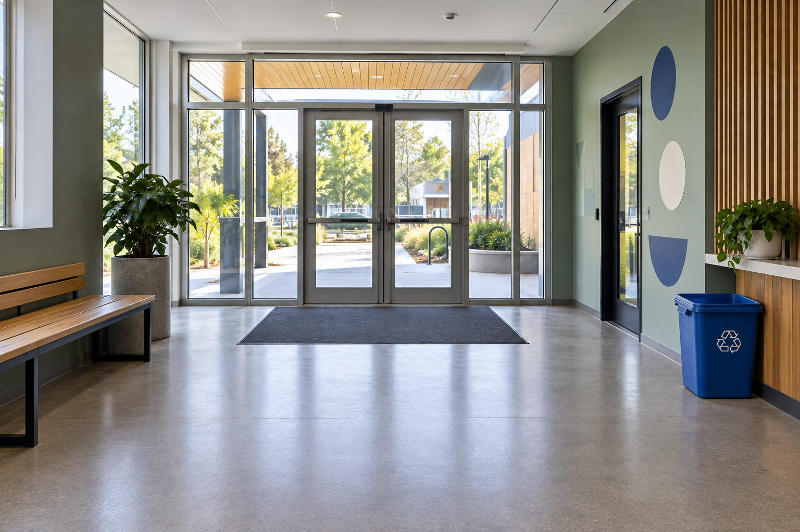
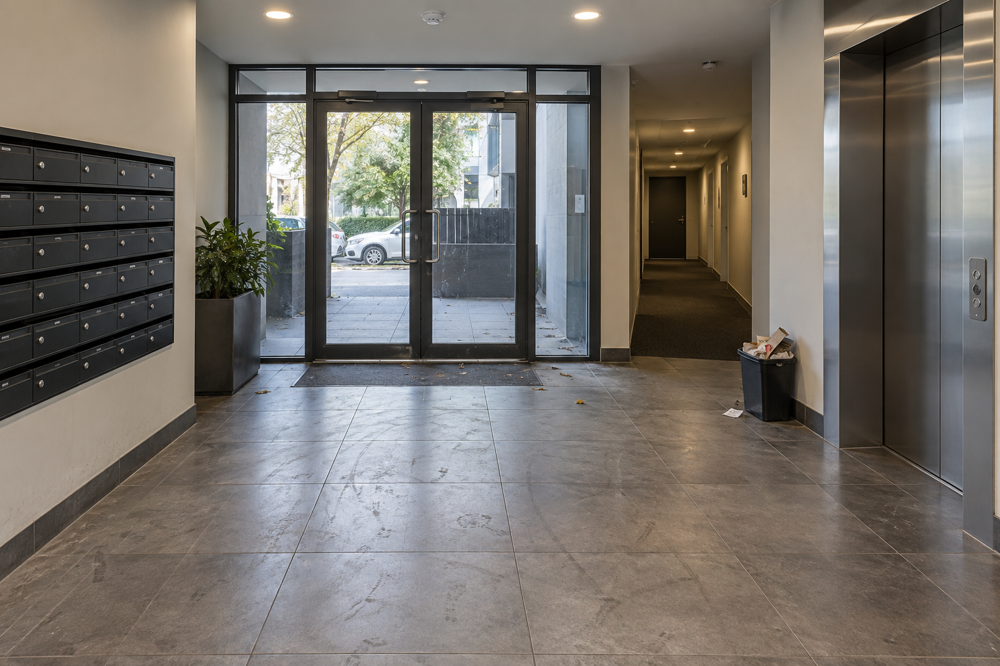

Walk the site
We record floor area, access times, surface types and the spaces that take the most work.
MELBOURNE / COMMERCIAL CLEANING / 05:30
Workplaces, strata and facilities cleaned with a clear plan, a consistent crew and proof of every agreed visit.
Build your cleaning plan↗01 / THE IDEA
Every clean should make the next day easier. We plan around the way a building is used, then make the details visible: what was done, when it happened and what needs attention next.
For a facility manager, office lead or strata committee, that means fewer surprises and a space that feels ready for people.
02 / WHAT WE CLEAN
Different sites. Different rhythms. Choose a service to see how the scope is shaped.

Entries, lifts, corridors, stairs, waste areas and periodic rotations.

After-hours routines for desks, meeting rooms, amenities and arrival spaces.

Site-specific methods for education, retail, allied health and shared environments.
03 / OUR PROCESS
A reliable service has a plan behind it and a record after it. Each stage is designed to keep the work consistent and easy to review.
START WITH A SITE WALK ↗We record floor area, access times, surface types and the spaces that take the most work.
Areas, tasks, frequencies, periodic work and responsibilities are written down before service starts.
A consistent team follows the plan and records each visit, including exceptions and access issues.
Agreed photos, checklists and supervisor reviews show what happened and what comes next.
04 / VISIBLE RESULTS
Five matching viewpoints, one easy comparison. These are generated concept images for this fictional business.

SELECT A SPACE / DRAG THE HANDLE / SEE THE DETAIL
05 / PRICING GUIDE
Sample monthly scopes in AUD. A site walk sets the actual price, tasks and service frequency.
For a compact office that needs a reliable weekly clean.
For multi-zone sites with several visits each week.
For common property with rotations and committee visibility.
Illustrative prices only. Final quotes depend on labour hours, access, frequency, amenities, consumables and specialist tasks.
06 / IN THEIR WORDS
Fictional sample testimonials for this website concept. Replace with verified client feedback before launch.
“We finally have a scope the whole committee understands. The updates are short, useful and easy to pass on.”
Sample strata manager“The office simply feels ready in the morning. When something needs attention, it is noted before we have to chase it.”
Sample workplace manager“The agreed photos help our team see the result without adding another meeting to everyone's week.”
Sample facility coordinator07 / SERVICE ZONE
A live map of Melbourne and an illustrative service zone covering the CBD, Carlton, Richmond, Fitzroy, Southbank and nearby commercial precincts.
08 / GOOD TO KNOW
Yes. The service window, access arrangements and alarm process are agreed during the site walk.
Products and equipment are part of the scope. Washroom consumables can be included or supplied by the site, depending on the agreed plan.
An agreed visit record can include attendance, checklist status, photos for selected zones and any access or maintenance issues.
Yes. The scope can be reviewed when occupancy, operating hours or site needs change.
09 / GET STARTED
Give us the basics and we’ll prepare a site brief you can review. This demonstration form stays in your browser and sends nothing.